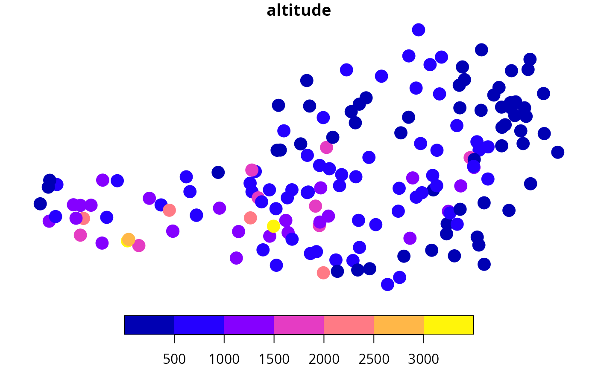

Downloading Dataset Meta Data
gs_metadata.RdDownloading Dataset Meta Data
Usage
gs_metadata(
mode,
resource_id,
type = NULL,
version = 1L,
config = list(),
expert = FALSE,
verbose = FALSE
)Arguments
- mode
character, specify mode of data.
- resource_id
character, specify resource identifier of data.
- type
NULLor character. Only required if a data set is available in more than one type (e.g., \"grid\" and \"timeseries\").- version
integer, API version (defaults to
1L).- config
empty list by default; can be a named list to be fowrarded to the
httr::GETrequest if needed.- expert
logical, defaults to
FALSE. IfTRUEthe script will not check if the input arguments are valid. May result in unsuccessful requests but increases the speed asgs_datasets()does not have to be called (one less API request).- verbose
logical, if set
TRUEsome more output will be produced.
Value
Named list with a series of information about the dataset. Most importantly this function returns information about the stations for which data is available as well as what parameters are available. Note that the availability of data depends on the station; the meta information only provides an overview of what is possibliy avialable.
$stations: ansfobject (spatial feature data frame) containing information of all stations belonging to this dataset including geographical location, name, andid(the station identifier) wihch is used when retrieving data (see e.g.,gs_stationdata()).$parameters: adata.framecontaining thenameof the parameters used when retrieving the data (see e.g.,gs_stationdata()) as well as a parameter and description. Only available in German, tough.
In addition, the following information will be returned as separate entries in the list:
$title/$id_type: title/id type of the dataset$frequency: observation frequency/temporal interval (see alsogs_temporal_interval())$type: data type (e.g., "station")$mode: data set mode (e.g., "historical")$response_formats: formats the API provides$start_time/$end_time: date/time range of availability of this data set$url: URL; origin of the data set
Examples
## Loading meta information for data set with
## mode == "historical" and resource_id = "tawes-v1-10min"
tawes <- gs_metadata("historical", "tawes-v1-10min")
## Uses partial matching, thus this short form can be used in case
## there is only one match (one specific data set). With verbose = TRUE
## a message will tell which meta data set will be requested.
synop <- gs_metadata("hist", "synop", verbose = TRUE)
#> Requesting data for mode = "historical" and resource_id = "synop-v1-1h"
#> Calling: https://dataset.api.hub.geosphere.at/v1/station/historical/synop-v1-1h/metadata
## generic sf plotting; variable 'altitude'
plot(synop$stations["altitude"], pch = 19, cex = 2)
